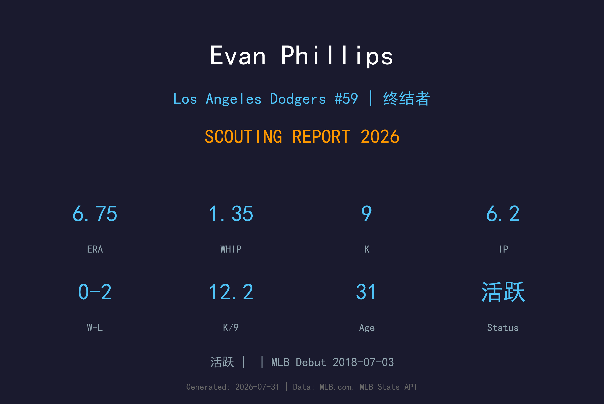
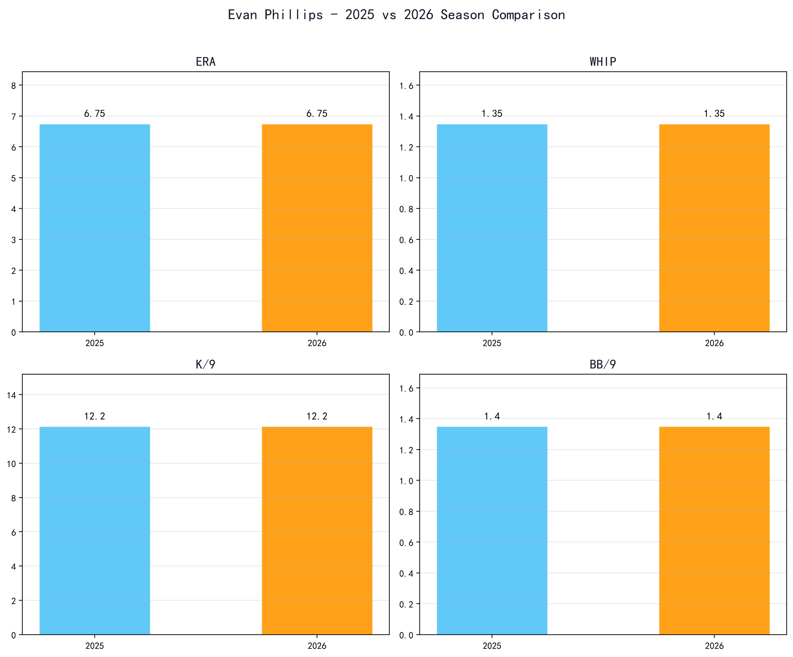
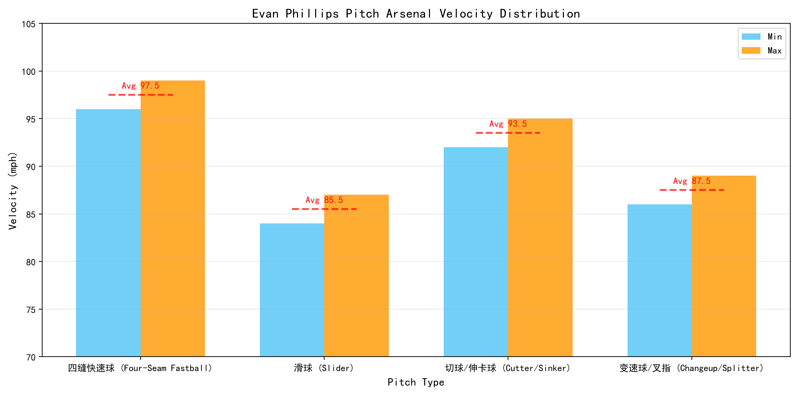
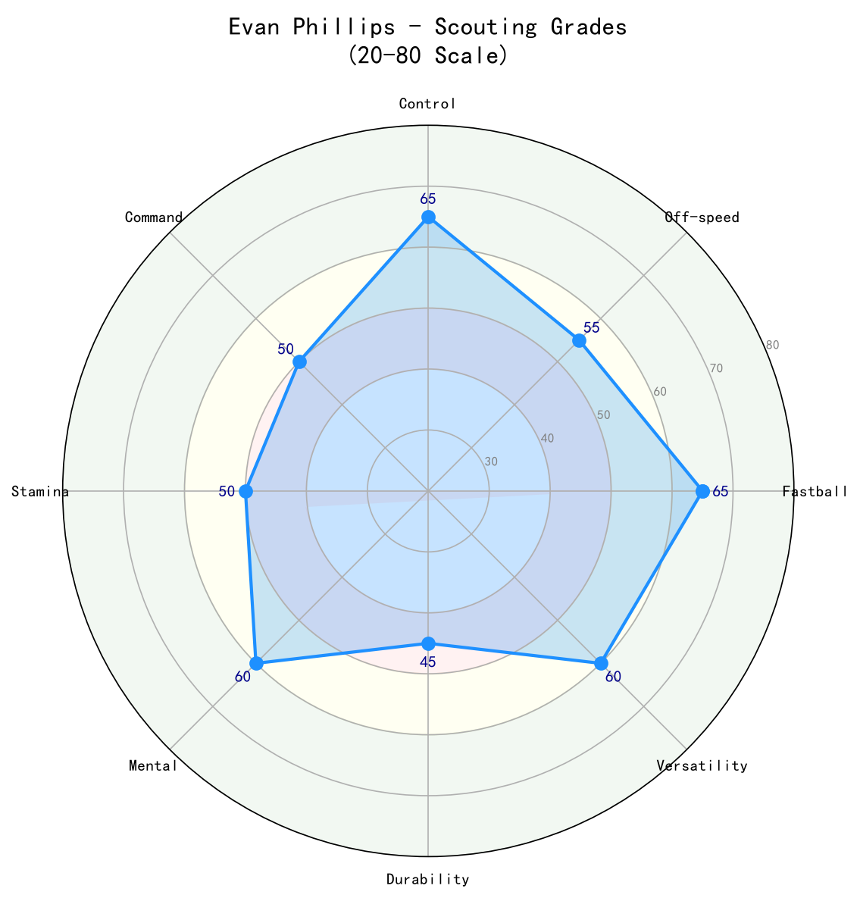

Los Angeles Dodgers #59 | 投手

Evan Phillips 是道奇队的冠军级 终结者 ，目前是道奇活跃名单的一员。
2026 年数据：ERA 6.75、WHIP 1.35、K/9 12.2、IP 6.2。 他依靠球路组合与投球智慧在球队中扮演重要角色，是道奇投手轮值/牛棚深度的重要一环。
作为一名 终结者，Evan Phillips 的价值在于稳定的局数贡献与关键出局能力。在道奇教练团体系下，他有望继续发挥自己的特长。
Evan Phillips 于 2018-07-03 登上大联盟，开始了自己的 MLB 生涯。作为一名 终结者，他逐步在最高舞台上建立自己的角色。
Phillips 是 2024、2025 年道奇世界大赛冠军牛棚的重要一员，多次在季后赛关键时刻登板关门。2025 年常规赛承担主要终结者角色，表现稳定。
2026 年开季后因伤进入伤病名单，8 月初才回归大联盟。回归后样本尚小，但三振能力（K/9 12+）仍在，需要比赛节奏恢复控球与压制力。

| 赛季 | G | GS | W-L | ERA | IP | K | BB | WHIP | K/9 |
|---|---|---|---|---|---|---|---|---|---|
| 2025 | — | — | —-— | — | — | — | — | — | — |
| 2026 | 7 | 0 | 0-2 | 6.75 | 6.2 | 9 | 1 | 1.35 | 12.15 |

96-99 mph
Evan Phillips 的压制核心球种，球速 elite，出手点稳定，能在好球带边缘制造挥空。作为终结者，这颗球是他在第九局建立优势的基础。
84-87 mph
主要的三振与追打球，sharp lateral break，在两好球后极具威胁。与快速球的速度差让打者难以适应。
92-95 mph
用来制造 软弱击球 或地面球，增加配球变化。在需要双杀或滚地球出局时非常有效。
86-89 mph
偶尔用来对付左打者，改变节奏与速度差。使用频率不高，但能避免被针对。
Evan Phillips 作为一名 终结者，球路组合以快速球搭配变化球为主。2026 年 ERA 6.75、WHIP 1.35、K/9 12.2、BB/9 1.4。 他的投球策略取决于能否在好球带边缘工作，避免把球投到中心区域。
WHIP 与 BB/9 是衡量他控球稳定性的关键指标。若能把球持续投进好球带，他的三振能力与球路组合将更具威胁；反之，高保送会让他陷入被动。
保持稳定健康是他继续贡献的基础，道奇会谨慎管理他的工作量。

综合 8 项工具评分的平均表现，反映 Evan Phillips 作为 终结者 的当前价值。
B 级 / 终结者
Evan Phillips 作为道奇 终结者，未来将继续在现有角色中发挥作用。道奇教练团会根据球队需求与对手特点来最大化他的价值。
Evan Phillips 是洛杉矶道奇队的 终结者，于 2018-07-03 完成 MLB 首秀。他在道奇体系中扮演着重要角色，无论是作为稳定轮值/牛棚成员还是多功能工具人，都为球队提供价值。
他的职业态度和团队合作精神受到教练团认可，未来将继续在道奇追逐季后赛和世界大赛冠军。